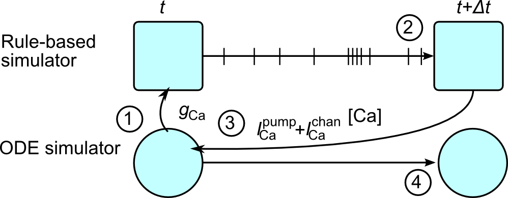

KappaNEURON¶
KappaNEURON is a python package that integrates the NEURON simulator with the SpatialKappa simulator of rule-based models. Rule-based models allow interactions between the combinatorially large number of protein complexes in the postsynaptic proteome to be expressed straightforwardly.
Scientific motivation¶
Synaptic plasticity depends on the interaction between electrical activity in neurons and the synaptic proteome, the collection of over 1000 proteins in the post-synaptic density (PSD) of synapses.
Currently the largest dynamic models of synaptic plasticity contain around 40 distinct proteins, second messengers and ions [Heil2018]. These proteins often have multiple binding sites, allowing large numbers of distinct complexes (combinations of bound proteins) to form. For example, calcium can bind to four sites on calmodulin molecule, and calmodulin bound with varying numbers of calcium ions can bind to many combinations of sites on CaMKII dodecamers. This quickly leads to a combinatorial explosion in the number of complexes that can form in a synapse.
Rule-based models allow specification and simulation of proteins and protein complexes with combinatorially large numbers of states which arise from protein-protein interactions, post-translational modifictions and conformational changes [Stefan2014]. Second generation rule-based languages such as Kappa and BNGL have a well-defined syntax for rules, generalized reactions which express binding between sites and modifications such as phosphorylation. Simulations of rule-based models are stochastic and thus can deal with small copy numbers. Rule-based are thus suited to modeling the large number (order of 100s) of distinct proteins in postsynaptic proteome many of which exist in small numbers (often <100) due to the restricted space of the spine head.
In synapses there is an intimate coupling between the molecular and electrical aspects of neurons: the calcium current entering the synapse depends both on the membrane potential in the spine head, which controls the conductance of NMDAR receptors, but also on the free intracellular calcium, since this influences the I-V relationship of the channel, which can be modeled using the GHK equations. This coupling motivated the development of the KappaNEURON package [Sterratt2015], which integrates NEURON 7.4 and the SpatialKappa kappa simulator. It allows for detailed synaptic models to be simulated in the context of the electrical activity of the cell, as illustrated below.

Example of a rule-based model¶
The first use case in the KappaNEURON use case is a simple demonstration of using KappaNEURON, a python module, to model a calcium pump. It demonstrates the principle of how KappaNEURON works, though in practice there is not particular advantage in using KappaNEURON for such a simple situation; the second use case gives a more realistic example in which the benefits of KappaNEURON are apparent.
The Kappa code for a simple calcium pump, which we can imagine as being in a spine head, is shown below:
1 ## File caPump.ka - Simple calcium pump 2 ## Agent declarations, showing the agent names and binding sites 3 %agent: ca(x) # Calcium with binding site 4 %agent: P(x) # Pump molecule with binding site 5 6 ## Variable declarations 7 %var: ’vol’ 1 # Volume of spine head in um3 8 %var: ’NA’ 6.02205E23 # Avogadro’s constant 9 %var: ’agconc’ 1E18/(’NA’ * ’vol’) # Concentration of one agent (in mM) in the volume 10 11 # Rate constants in /mM-ms or /ms, depending on the number of complexes on LHS of rule 12 %var: ’k1’ 0.001 # /mM-ms 13 %var: ’k2’ 1 # /ms 14 15 ## Rules 16 # Note the scaling of the rate constant of the bimolecular reaction 17 ’ca binding’ ca(x), P(x) -> ca(x!1), P(x!1) @ ’k1’ * ’agconc’ 18 ’ca release’ ca(x!1), P(x!1) -> P(x) @ ’k2’ 19 20 ## Initialisation of agent numbers 21 # Overwritten by NEURON but needed for SpatialKappa parser 22 %init: 1000 ca(x) 23 %init: 10000 P(x) 24 25 ## Observations 26 %obs: ’ca’ ca(x) # Free Ca 27 %obs: ’P-Ca’ ca(x!1), P(x!1) # Bound Ca-P 28 %obs: ’P’ P(x) # Free P
This model description can be interpreted by Kappa simulators such as SpatialKappa or KaSim version 3, which simulate the model using a method based on Gillespie’s method, in which transitions (here calcium-pump binding and unbinding events) are simulated one-by-one. The time between events is random - there is no fixed dt.
A brief description of how this file works is in the KappaNEURON use case. KappaNEURON allows the user to use this file in place of a NEURON mod file. NEURON is responsible for telling the Kappa model how much calcium should be created as a result of ion channels or receptors.
Principle of integration¶
{kind=link}
KappaNEURON integrates the NEURON and SpatialKappa parts of the simulations by running them alternately every NEURON Δt (typically 25μs), and synchronizing at every timestep so that the charge in the Kappa simulation is consistent with the membrane potential.
The procedure KappaNEURON uses to update the time from t to t + Δt is:
- Pass all relevant variables from NEURON to Kappa, e.g. conductances and voltages needed to compute the membrane current through channels.
- Run the rule-based simulator from t to t + Δt.
- Compute the net change in the total number of each bridging species S (including in any complexes) over the time step and convert back to a current, which is then passed to NEURON.
- Run NEURON forward by Δt.
For full details of the integration see [Sterratt2015].
Demonstration¶
The use case in the KappaNEURON use case demonstrates and documents the python code required to run the example simulation.
References¶
| [Heil2018] | Heil K. F., Wysocka. E., Sorokina, O., Kotaleski, J. H., Simpson, T. I., Armstrong, J. D., Sterratt, D. C. (2018). ‘Analysis of proteins in computational models of synaptic plasticity’. doi:10.1101/254094. bioRxiv:254094 |
| [Stefan2014] | Stefan M. I., Bartol T. M., Sejnowski, T. J., Kennedy M. B. (2014). ‘Multi-state Modeling of Biomolecules’ PLOS Comp. Biol. 10. doi:10.1371/journal.pcbi.1003844 |
| [Sterratt2015] | (1, 2) Sterratt, D. C., Sorokina, O. and Armstrong, J. D. (2015). ‘Integration of rule-based models and compartmental models of neurons’. In O. Maler, Á. Halász, T. Dang and C. Piazza, eds., Hybrid Systems Biology: Second International Workshop, HSB 2013, Taormina, Italy, September 2, 2013 and Third International Workshop, HSB 2014, Vienna, Austria, July 23-24, 2014, Revised Selected Papers, vol. 7699 of Lecture Notes in Bioinformatics, pp. 143–158. Springer International Publishing, Cham. doi: 10.1007/978-3-319-27656-4_9. Preprint at arXiv:1411.4980 |